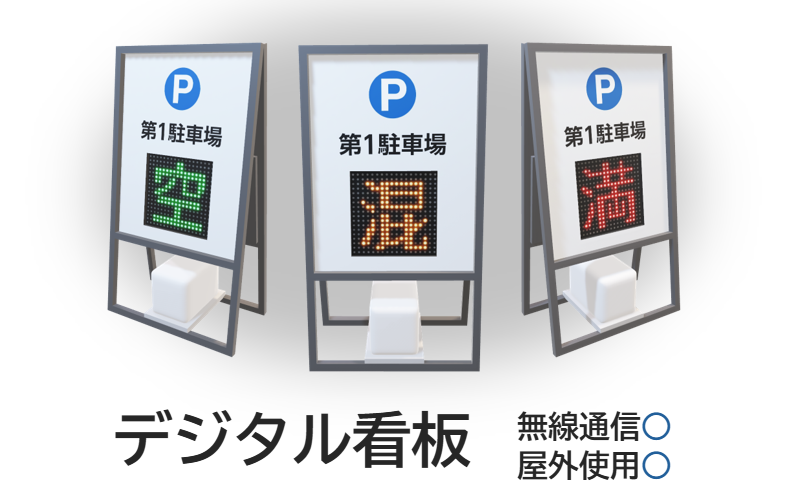
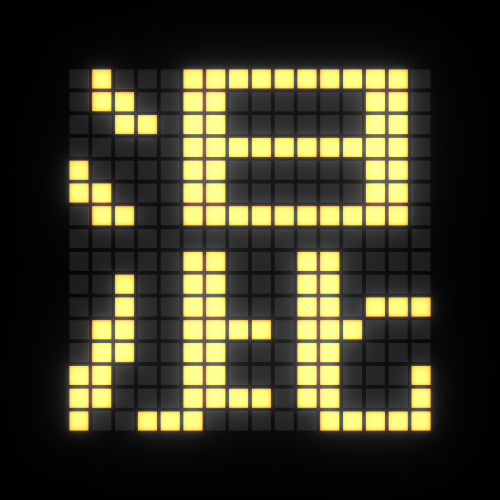
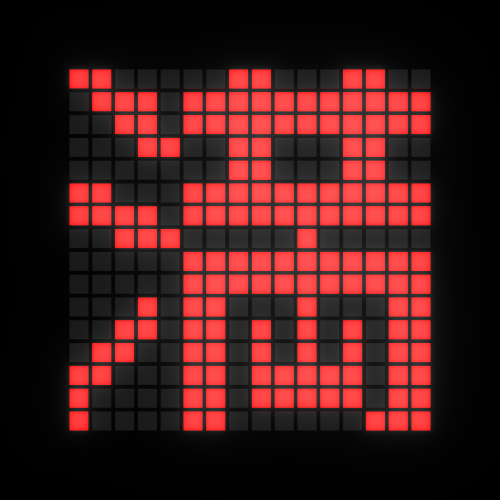

空車の明確化
センサーと連動した表示更新により、駐車場の状態を入場前から確認できるようにします。
 SPACES
背景
SPACES
背景

このプロジェクトを始めた理由
発端は、駐車場の出口から車が出ていくのを見て、空きができたと判断して入場した出来事でした。しかし、警備員はまだ満車だと判断しており、転回して出るよう案内しました。そこで、空いていなければ出ると伝えて入場したところ、実際には1台分の空きがありました。現場の状況と表示・運用の認識差をなくすため、駐車場の状態をより正確かつ速やかに伝える仕組みをつくります。
導入によって目指す状態
センサーと連動した表示更新により、駐車場の状態を入場前から確認できるようにします。
空き状況の把握を正確にし、不要な入庫や転回を減らします。
満車表示のための巡回・看板更新の回数を減らし、現場の負担軽減につなげます。
現状と導入案
今年度の目的
カメラによる自動検知とWeb情報共有媒体を導入し、駐車場の混雑状況をリアルタイムに可視化します。利用者が入場前に状況を判断できる環境を整え、不要な入退場を減らします。
降雪による誤検知リスクを考慮し、「IoT検知」と「警備員による目視・手動運用」を組み合わせたハイブリッド管理を採用します。
混雑状況をリアルタイムに共有し、利用者が事前に判断できる状態へ。
検知データと現場の判断をひとつのシステムに統合。
誰でも運用でき、将来の大学組織へ移管できる仕組みをつくる。
段階的な導入
カメラが満車状況を検知。警備員へ通知し、看板設置のための巡回負担を減らします。
可動式LED看板を導入し、状況に応じて表示を自動切替します。
ブラウザからアクセスできるWebシステムを公開。学生や利用者が空き状況を確認できます。
システム構成
表示ステータス


年間スケジュール
検知テスト / 正解データ蓄積 / 通知システム開発
デジタル看板の設計・制作
手動運用の実装 / 学会発表
運用マニュアル / データ比較 / 有用性評価
活動記録
夏季の検知精度、冬季の手動切り替え運用、警備員向けUI/UXの検証結果を記録し、将来の運用と移管に活かします。